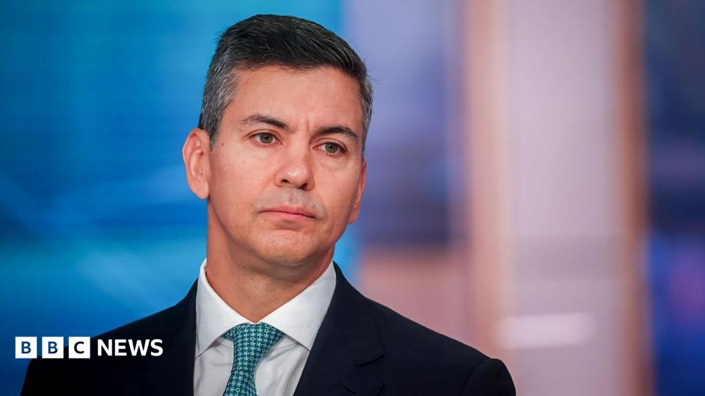

World · 07 Nov 2026
Paraguay's president impeached and under house arrest after bank collapse

Santiago Peña was ousted due to a banking crisis which left millions of people unable to access their money.
Multiple independent publishers are reporting on the same development: Paraguay's president impeached and under house arrest after bank collapse.
The available reports place the development in the World category. The accounts were compared for agreement on the central event rather than simply shared names or broad topics.
One of the available reports describes the development this way: Santiago Peña was ousted due to a banking crisis which left millions of people unable to access their money.
Readers should consult the linked source reports for additional context, updates and details that may change as the story develops.
Sources
This article was produced by the C. O. Eric AI Newsroom from the cited sources. It is published only after automated evidence and safety checks.